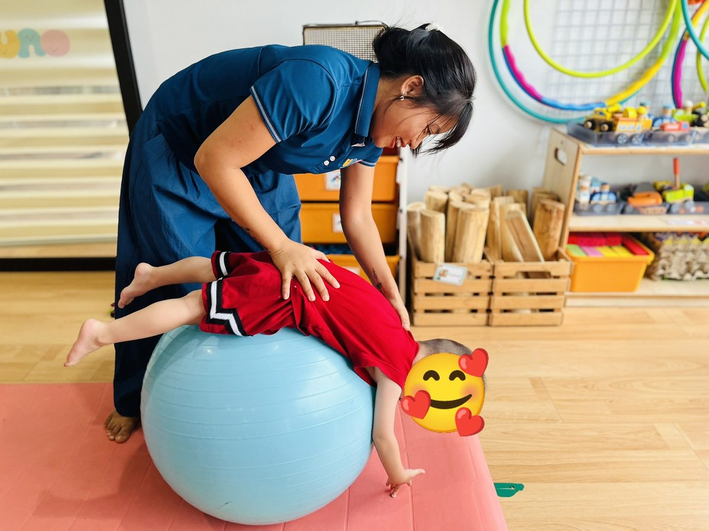
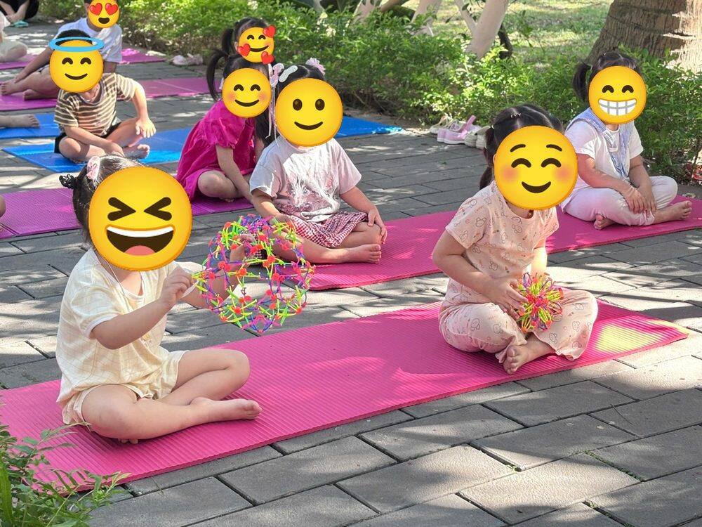
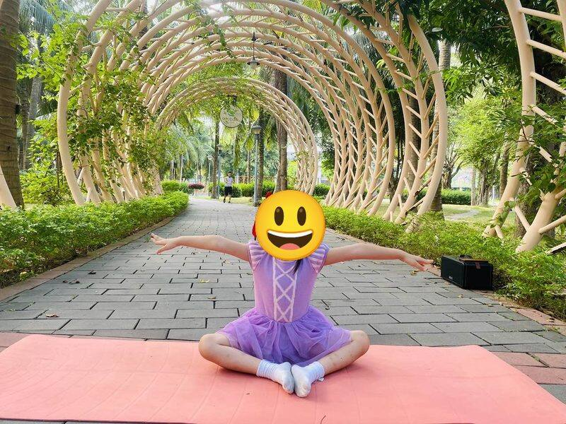
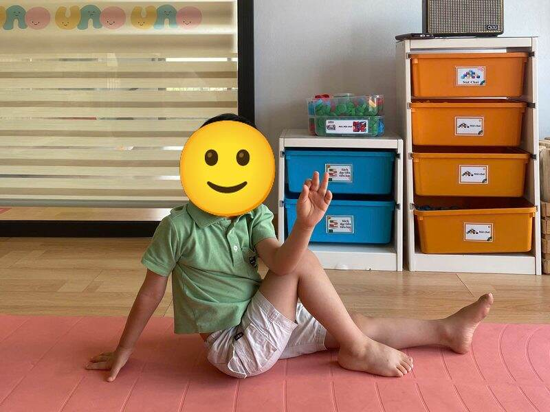
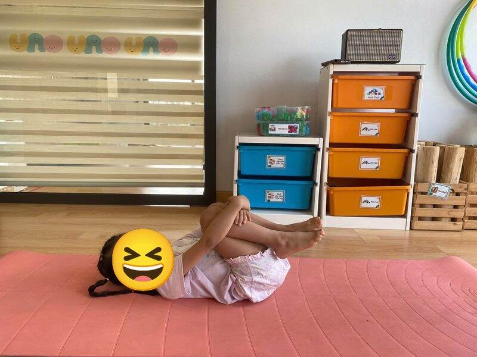
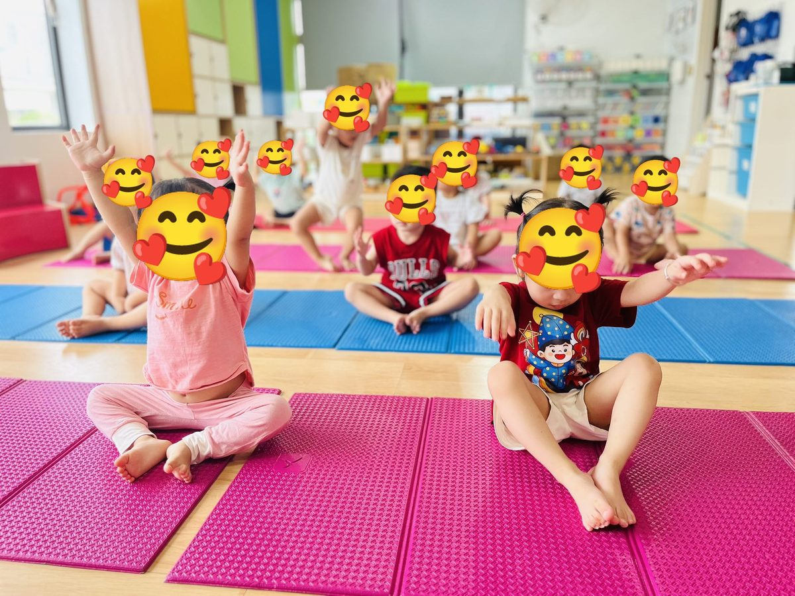

Yoga trẻ em · Sức khỏe
Bé biếng ăn, hay đầy bụng, táo bón: yoga nhẹ, massage bụng và bữa ăn vui

Bát cơm đã nguội. Miếng cơm vẫn ngậm trong má. Mẹ dỗ thêm thìa nữa, con lắc đầu, ôm bụng: “Con no rồi.”
Rồi tối đến, con kêu đau bụng. Ba ngày chưa đi ngoài. Nhiều nhà đang trải qua đúng cảnh này mỗi ngày, và giờ ăn trở thành giờ cả mẹ lẫn con đều mệt.
Bài này Sophia chia sẻ những gì bố mẹ và cô giáo mầm non có thể làm cùng con: một bữa ăn nhẹ nhàng hơn, cái xoa bụng ấm tay, vài tư thế yoga như trò chơi, và thói quen đi vệ sinh. Không có món nào ăn vào là con hết biếng ăn. Cô nói thật vậy. Nhưng bụng của trẻ con rất biết nghe lời nhịp sống. Nhịp sống đều, bụng nhẹ dần.
- Ba chuyện đi cùng nhau
- Vì sao
- Nhìn cả con người
- Bữa ăn vui
- Đĩa cầu vồng
- Đi vệ sinh
- Xoa bụng
- Video
- 8 tư thế
- Trò chơi
- Cho cô giáo
- Khi nào đi khám
Biếng ăn, đầy bụng, táo bón: ba chuyện hay đi cùng nhau
Bố mẹ thường hỏi riêng từng chuyện. Con lười ăn. Con hay chướng bụng. Con táo bón. Nhưng ở nhiều bạn nhỏ, ba chuyện này nối vào nhau thành một vòng tròn:
Bụng đang đầy thì chẳng ai thấy đói. Người lớn cũng vậy thôi. Nên đôi khi muốn con ăn ngon hơn, việc đầu tiên lại là giúp bụng con nhẹ đi.
Táo bón ở trẻ em cũng không hiếm. Một tổng hợp các nghiên cứu trên khắp thế giới ước tính khoảng một trên mười trẻ có táo bón chức năng, tức là táo bón không do bệnh thực thể (Koppen và cộng sự, Journal of Pediatrics, 2018). Còn chuyện kén ăn, sợ món mới, thì rất hay gặp ở tuổi mầm non. Phần lớn là một giai đoạn con đi qua, không phải lỗi của bố mẹ hay của con.
Vì sao bụng con hay “dỗi”?
Thường không phải một lý do. Mà là vài điều nhỏ cộng lại, ngày này qua ngày khác.
Ăn vặt sát bữa
Một hộp sữa, gói bim bim, cái bánh lúc bốn giờ chiều. Đến bữa tối, bụng còn chưa đói.
Ít nước, ít rau
Uống ít nước lọc, nhiều nước ngọt. Rau quả ít. Phân khô, cứng, đi ngoài đau.
Ít chạy nhảy
Cơ thể ít vận động thì ruột cũng “lười” theo. Trẻ con cần được chạy, leo, lăn.
Nhịn đi vệ sinh
Đang mải chơi, ngại nhà vệ sinh ở trường, hoặc từng đi ngoài bị đau nên sợ. Càng nhịn càng khó đi.
Bữa ăn căng thẳng
Bị giục, bị dọa, bị so sánh với bạn. Bữa ăn thành cuộc chiến, con đóng cửa luôn cái bụng.
Vừa ăn vừa xem
Mắt dán vào màn hình, miệng ngậm cơm. Con không nhận ra mình no hay đói, không nếm được vị gì.
Ép ăn thường phản tác dụng. Trong một thí nghiệm với trẻ mẫu giáo, khi bị nhắc “ăn hết đi”, các con ăn ít hơn và nói những câu tiêu cực về món ăn nhiều hơn so với khi được ăn tự nhiên (Galloway và cộng sự, Appetite, 2006).
Nhìn cả con người, không chỉ cái bụng
Sophia không xem biếng ăn hay táo bón là chuyện của riêng cái bụng. Trong yoga, con người có thân, có hơi thở, có cảm xúc, có suy nghĩ, và một phần sâu hơn là cảm giác bình an (cô viết kỹ trong bài Năm thể của con người). Với trẻ con, năm điều ấy giản dị lắm:
Thân
Chạy nhảy ngoài trời mỗi ngày. Uống nước lọc. Ăn đủ rau, quả, ngũ cốc.
Hơi thở
Thở bụng chậm cùng gấu bông. Bụng phồng, bụng xẹp, ruột cũng được xoa nhẹ.
Cảm xúc
Bữa ăn vui, không dọa, không chê. Con lo lắng thì bụng cũng thắt lại.
Suy nghĩ
Tắt màn hình khi ăn. Con được nhìn, ngửi, nếm, nghe tiếng mình nhai.
Bình an
Ngồi cùng cả nhà, được hỏi chuyện. Bữa cơm là lúc gần nhau, không phải lúc bị kiểm tra.
Mấy tư thế yoga, cái xoa bụng ở dưới là một phần quý. Nhưng chỉ là một phần. Nếu ngày nào con cũng ăn vặt, ít nước, ngồi yên một chỗ, thì xoa bụng mấy cũng khó bù được.
Bữa ăn vui: vài điều nhỏ mà hiệu quả

Có một cách chia việc mà nhiều chuyên gia dinh dưỡng nhi hay nhắc, của chuyên gia dinh dưỡng Ellyn Satter: người lớn lo ăn gì, ăn lúc nào, ăn ở đâu. Con lo ăn bao nhiêu, và có ăn hay không. Nghe thì lạ. Nhưng khi người lớn thôi đếm từng thìa, con thường ăn thoải mái hơn.
- Giờ ăn đều. Ba bữa chính, một hai bữa phụ, gần giống nhau mỗi ngày. Không ăn vặt trong khoảng một tiếng rưỡi trước bữa chính.
- Phần nhỏ, xin thêm. Đĩa nhỏ, lưng bát. Con ăn hết rồi xin thêm thấy vui hơn nhiều so với nhìn một bát đầy mà sợ.
- Khoảng 20 đến 30 phút. Hết giờ thì dọn, nhẹ nhàng, không trách. Bữa sau con sẽ đói hơn. Ngậm cơm cả tiếng đồng hồ chỉ làm cả nhà mệt.
- Cho con tự xúc. Rơi vãi một chút cũng được. Tự tay đưa vào miệng, con thấy mình làm chủ bữa ăn.
- Nếm thử, không ép. Món mới đặt một miếng nhỏ cạnh món con thích. Hôm nay chỉ liếm thử, mai cắn một miếng. Nhiều bạn phải gặp một món tám, mười lần mới chịu.
- Cùng nhặt rau, rửa quả. Con chạm vào, ngửi, gọi tên. Rau mình tự nhặt, con hay tò mò muốn nếm.
- Một phút trước khi ăn. Cả nhà ngồi yên, ba hơi thở, nhìn đĩa thức ăn, nói “cảm ơn”. Nhỏ thôi, mà bữa ăn chậm lại hẳn.
- Không thưởng, phạt bằng đồ ăn. “Ăn hết rau mới được kẹo” vô tình dạy con rằng rau là thứ khổ sở, kẹo mới là phần thưởng.
Trong một thử nghiệm ở Anh, trẻ 2 đến 6 tuổi được bố mẹ cho nếm một miếng nhỏ một loại rau con chưa thích, mỗi ngày, trong khoảng hai tuần. Sau đó các con thích loại rau ấy hơn và ăn nhiều hơn hẳn so với nhóm không được nếm (Wardle và cộng sự, European Journal of Clinical Nutrition, 2003). Nếm đều, nếm ít, không ép.
Trò chơi: Đĩa cầu vồng
Mỗi màu rau quả mang một kiểu chất xơ, vitamin khác nhau. Trẻ con không cần nhớ mấy điều đó. Con chỉ cần một trò chơi: hôm nay đĩa của mình có mấy màu?
🌈 Con chọn món cho đĩa cầu vồng hôm nay
Bấm vào món ăn để bỏ vào đĩa nhé.
In ra dán ở bếp cũng được: mỗi bữa con tô một màu mình đã ăn.
Hai điều đi kèm: nước lọc và chất xơ. Một cách ước lượng hay dùng cho trẻ từ 3 tuổi là số gam chất xơ mỗi ngày bằng “tuổi của con cộng thêm 5” (Williams và cộng sự, Pediatrics, 1995). Con 4 tuổi là khoảng 9 gam, tương đương vài phần rau quả và một ít ngũ cốc nguyên hạt mỗi ngày. Thêm chất xơ thì nhớ thêm nước, tăng từ từ để bụng quen.
Thói quen đi vệ sinh
Sau bữa ăn, ruột tự nhiên co bóp mạnh hơn. Người ta gọi là phản xạ dạ dày và đại tràng. Đây là lúc dễ đi ngoài nhất.
- Sau bữa ăn 10 đến 15 phút, cho con ngồi bô hoặc bồn cầu khoảng năm phút. Không giục, không đứng canh.
- Kê ghế nhỏ dưới chân để gối cao hơn hông, người hơi nghiêng về trước. Chân lơ lửng thì con khó rặn.
- Thổi một quả bóng bay, thổi chong chóng khi ngồi. Con vui, bụng cũng biết cách đẩy nhẹ.
- Khen vì đã ngồi, không khen hay chê kết quả.
Xoa bụng cho con theo vòng tròn
Đây là phần các con thường thích nhất. Con nằm ngửa, bố mẹ hoặc cô ngồi bên. Xoa hai bàn tay cho ấm. Rồi hỏi con trước: “Cô xoa bụng cho con nhé?” Con gật đầu mới làm.
👐 Xoa bụng tập cùng hình
Bấm “Bắt đầu”, tay mình đi theo chấm vàng.
Mỗi vòng khoảng 4 giây. 8 đến 10 vòng là đủ.
- Đặt cả lòng bàn tay quanh rốn con. Lực nhẹ như xoa cho em bé, đủ để da và lớp mỡ mỏng chuyển động theo tay.
- Xoa vòng tròn theo chiều kim đồng hồ khi mình nhìn vào bụng con: đi lên ở bên phải của con, ngang qua phía trên rốn, xuống ở bên trái của con. Đây là chiều đi của ruột già.
- Vòng tròn nhỏ quanh rốn trước, rồi rộng dần ra.
- Kết thúc bằng cách đặt yên hai bàn tay ấm trên bụng con, thở ba hơi cùng con.

Ở lớp có những buổi cô cho các con tập với quả bóng lớn. Con nằm sấp trên bóng, hai tay chạm đất, cô giữ hai bên hông, bụng tựa lên bóng được ép nhẹ. Rồi nằm ngửa trên bóng, bụng được duỗi dài ra. Có bóng ở nhà thì bố mẹ thử nhé, luôn có người lớn đỡ con. Cô có viết riêng bài Quả bóng xanh trong lớp Yoga.
Một tổng quan về xoa bụng trong táo bón cho thấy xoa bụng có thể giúp tăng số lần đi ngoài và giảm khó chịu, an toàn, không tốn kém. Tuy vậy phần lớn nghiên cứu còn nhỏ và chủ yếu ở người lớn (Sinclair, Journal of Bodywork and Movement Therapies, 2011). Nên cô xem xoa bụng là một cách kết nối dịu dàng giúp bụng thư giãn, không phải thuốc.
Không xoa khi con đang đau bụng dữ dội, sốt, nôn, bụng chướng căng cứng, hoặc con không muốn. Xoa lưng, xoa chân cho con có trong bài 10 phút massage cuối buổi Yoga.
Video: xoa bụng và 3 động tác vui
Gần hai phút. Bố mẹ mở cho con xem rồi cùng làm. Thở với gấu bông, xoa bụng 8 vòng, rồi quả chanh lăn, đạp xe trên trời, em bé hạnh phúc.
8 tư thế yoga nhẹ cho cái bụng
Tập lúc bụng đói vừa, trước bữa ăn, hoặc sau ăn ít nhất một tiếng. Ngay sau bữa thì chỉ ngồi chơi nhẹ nhàng thôi. Mỗi tư thế vài hơi thở, kèm một câu chuyện nhỏ. Với trẻ con, tư thế nào cũng là một trò chơi.
Ảnh thật từ các lớp Yoga trẻ em của cô Sophia. Khuôn mặt các bé được che để bảo vệ các con. Hai hình đạp xe và em bé hạnh phúc do Sophia Yoga tự vẽ.

Mèo và bò
Marjaryasana, Bitilasana
Chống tay và gối. Hít vào, bụng thả xuống, ngẩng lên kêu “ụm bò”. Thở ra, cong lưng như chú mèo giận, kêu “meo”. Năm, sáu lượt, chậm thôi.
“Bò ăn cỏ no rồi. Mèo vươn mình đây.”

Rắn hổ mang
Bhujangasana
Nằm sấp, hai tay chống dưới vai, nâng ngực lên nhẹ nhàng. Bụng nằm trên thảm, được ép nhẹ. Thở ra kêu “xì xì”. Ba hơi thở rồi hạ xuống nghỉ.
“Chú rắn ngóc đầu xem ai đến chơi.”

Con bướm
Baddha Konasana
Ngồi, hai lòng bàn chân chạm nhau, gối vỗ lên xuống như cánh bướm. Rồi ngồi yên, lưng thẳng, thở chậm vào bụng.
“Bướm bay qua vườn rau. Bướm đậu xuống bông cải.”

Vặn mình
Ardha Matsyendrasana, phiên bản cho bé
Ngồi duỗi chân, co một gối lên, ôm gối rồi xoay người nhìn ra sau. Đổi bên. Vặn vừa đủ thôi, như vắt nhẹ một cái khăn ướt.
“Mình xoay ra sau xem cái đuôi của mình đâu rồi.”

Quả chanh lăn
Apanasana, Pawanmuktasana
Nằm ngửa, ôm hai gối sát bụng. Lăn nhẹ qua trái, qua phải, lăn lên lăn xuống. Gối ép nhẹ vào bụng, hơi đầy trong bụng dễ ra hơn.
“Quả chanh tròn lăn lăn. Gió ơi bay ra nào!”
Đạp xe trên trời
Động tác đạp xe nằm ngửa
Nằm ngửa, hai chân giơ lên, đạp như đạp xe. Mười vòng đạp xuôi, mười vòng đạp lùi. Con thích thì hát một bài, đạp theo nhịp.
“Mình đạp xe đi chợ mua rau nhé!”
Em bé hạnh phúc
Ananda Balasana
Nằm ngửa, co gối lên hai bên bụng, hai tay nắm bàn chân hoặc cổ chân. Lắc lư qua lại. Trẻ con thường bật cười ở tư thế này.
“Em bé vừa bú no, nằm đạp chân cười.”

Quả cà chua
Balasana, tư thế em bé
Ngồi trên gót chân, cúi người cho trán chạm thảm. Mỗi hơi thở vào, bụng phồng lên chạm đùi. Như một cái xoa bụng từ bên trong. Nghỉ năm hơi thở.
“Quả cà chua chín đỏ, nằm ngủ trong vườn.”
Trong một nghiên cứu thử ở Hà Lan, trẻ 8 đến 18 tuổi bị đau bụng chức năng tập yoga 10 buổi. Sau đó các con đau bụng ít hơn và nhẹ hơn (Brands và cộng sự, Complementary Therapies in Medicine, 2011). Nghiên cứu nhỏ, chưa có nhóm so sánh, nên cô chỉ xem đây là một tín hiệu đáng mừng.

Trong lớp Yoga với gấu bông, các con nằm ngửa, đặt gấu bông lên bụng. Hít vào bằng mũi, bụng phồng, gấu đi lên. Thở ra bằng miệng thật chậm, gấu đi xuống. Năm lần. Hơi thở bụng làm cơ hoành lên xuống, như một bàn tay xoa nhẹ các cơ quan bên dưới. Và con dịu xuống thấy rõ.
Trò chơi quanh bữa ăn
Cô kể cho các con nghe hành trình của miếng cơm, kiểu một chuyến tàu đi qua năm ga:
Răng nhai, nhai, nhai. Nhai càng kỹ, tàu chạy càng êm.
Thực quản. Miếng cơm trượt xuống.
Dạ dày. Thức ăn được trộn mềm.
Ruột non. Lấy chất bổ nuôi cơ thể.
Ruột già. Uống đủ nước, tàu mới về đích nhẹ nhàng.
Bò nhai cỏ
Mỗi miếng ăn, cả nhà nhai chậm như chú bò, đếm thầm đến mười rồi mới nuốt. Ai nhai êm nhất?
Nhắm mắt đoán món
Con nhắm mắt, mẹ đưa một miếng quả nhỏ. Con ngửi, nếm, đoán tên. Món lạ thành món đố vui.
Bóng bay trong bụng
Nằm ngửa, tay trên bụng. Hít vào thổi phồng quả bóng trong bụng, thở ra cho bóng xẹp. Năm lần.
Bác nông dân nhỏ
Con trồng một chậu rau mầm, tưới mỗi ngày. Rau mình trồng, con hay muốn nếm thử.
Dành cho cô giáo mầm non: giờ ăn ở lớp

- Năm phút yoga trước bữa trưa. Mèo và bò, con bướm, rắn hổ mang, rồi ba hơi thở bụng. Các con ngồi vào bàn với cái bụng đã “thức dậy”.
- Không so sánh. “Bạn A ăn hết rồi kìa” làm con chậm ăn thấy xấu hổ, mà xấu hổ thì bụng thắt lại.
- Chia phần nhỏ, cho xin thêm. Con ăn hết phần nhỏ, được khen, rồi tự xin thêm.
- Uống nước theo giờ. Cả lớp cùng uống sau giờ chơi. Nhiều bạn mải chơi quên uống cả buổi.
- Nhắc đi vệ sinh sau bữa. Nhẹ nhàng, riêng tư. Bạn nào ngại nhà vệ sinh ở lớp, cô để ý giúp bạn quen dần.
Khi nào nên đưa con đi khám
Yoga, xoa bụng và nề nếp giúp được nhiều bạn nhỏ. Nhưng có những lúc bụng cần bác sĩ xem. Bố mẹ nên đưa con đi khám nhi khi:
- Con sụt cân, đứng cân lâu ngày, chậm lớn so với các bạn, hoặc mệt mỏi, xanh xao.
- Con sốt, nôn nhiều, nôn ra dịch xanh, hoặc bụng chướng to, căng cứng.
- Có máu trong phân, phân đen, hoặc đau bụng nhiều làm con thức giấc ban đêm.
- Táo bón kéo dài hơn hai tuần dù đã thay đổi ăn uống, hoặc con đi ngoài rất đau, són phân ra quần.
- Táo bón từ khi còn rất nhỏ, dưới một tháng tuổi.
- Con chỉ ăn được rất ít loại thức ăn, nghẹn, sợ nuốt, hoặc bữa ăn gây hoảng sợ thật sự.
Bố mẹ đừng tự ý cho con dùng thuốc nhuận tràng, thụt hậu môn hay thuốc kích thích ăn khi chưa có chỉ định của bác sĩ. Đau bụng dữ dội, liên tục, nhất là đau lệch về bên phải bụng dưới, thì đưa con đi cấp cứu ngay.
Điều Sophia muốn gửi bố mẹ
Trẻ con không ăn ngon vì được dỗ. Con ăn ngon khi đói thật, khi bụng nhẹ, và khi bữa ăn là chỗ an toàn.
Cô biết cảm giác của bố mẹ khi nhìn bát cơm còn đầy. Lo lắm. Sợ con thiếu chất, sợ con không lớn. Nhưng nỗi lo ấy, con cảm được. Bữa ăn căng, cái bụng nhỏ cũng căng theo. Nên có khi việc đầu tiên là chính mình thở chậm lại vài hơi trước khi ngồi vào bàn. Rồi xoa bụng cho con một chút mỗi tối. Đôi tay ấm của bố mẹ là thứ không bài tập nào thay được.
Đi từng bước nhỏ. Tuần này chỉ cần giờ ăn đều và một phút thở trước bữa. Tuần sau thêm cái xoa bụng. Cứ thế.
Rồi một hôm, con sẽ tự chạy vào bếp hỏi: “Hôm nay đĩa của con có mấy màu hả mẹ?”
🌿 Thầy cô muốn mang yoga, hơi thở và massage về lớp mình?
Cách dẫn trò chơi yoga theo câu chuyện, chuỗi tư thế cho từng độ tuổi, hơi thở với gấu bông, massage cho trẻ và cách giữ lớp vui mà vẫn nề nếp… cô hướng dẫn trong khóa Đào tạo Huấn luyện viên Yoga trẻ em.
Bố mẹ muốn con được học ở lớp của cô thì nhắn cô hỏi lịch nhé.
Tài liệu tham khảo
- Koppen I.J.N. và cộng sự (2018). The prevalence of functional defecation disorders in children: a systematic review and meta-analysis. Journal of Pediatrics, 198.
- Galloway A.T., Fiorito L.M., Francis L.A., Birch L.L. (2006). “Finish your soup”: counterproductive effects of pressuring children to eat on intake and affect. Appetite, 46(3).
- Wardle J. và cộng sự (2003). Increasing children's acceptance of vegetables; a randomized trial of parent-led exposure. European Journal of Clinical Nutrition, 57(2).
- Satter E. (2000). Child of Mine: Feeding with Love and Good Sense. Bull Publishing.
- Williams C.L., Bollella M., Wynder E.L. (1995). A new recommendation for dietary fiber in childhood. Pediatrics, 96(5).
- Sinclair M. (2011). The use of abdominal massage to treat chronic constipation. Journal of Bodywork and Movement Therapies, 15(4).
- Brands M.M., Purperhart H., Deckers-Kocken J.M. (2011). A pilot study of yoga treatment in children with functional abdominal pain and irritable bowel syndrome. Complementary Therapies in Medicine, 19(3).
- Tabbers M.M. và cộng sự (2014). Evaluation and treatment of functional constipation in infants and children: evidence-based recommendations from ESPGHAN and NASPGHAN. Journal of Pediatric Gastroenterology and Nutrition, 58(2).
Ảnh thật từ các lớp Yoga trẻ em của cô Sophia, khuôn mặt các bé đã được che. Video, hình xoa bụng, hình ngồi vệ sinh và hai hình tư thế do Sophia Yoga tự vẽ. Bài viết chia sẻ kiến thức và kinh nghiệm, không thay cho lời khuyên của bác sĩ nhi.